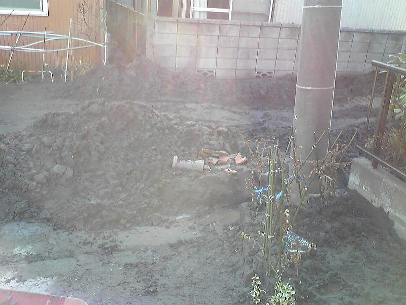
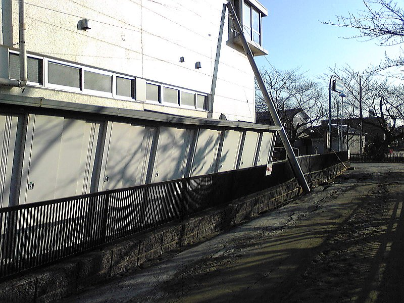
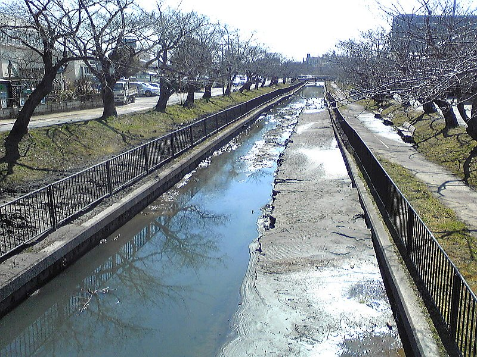
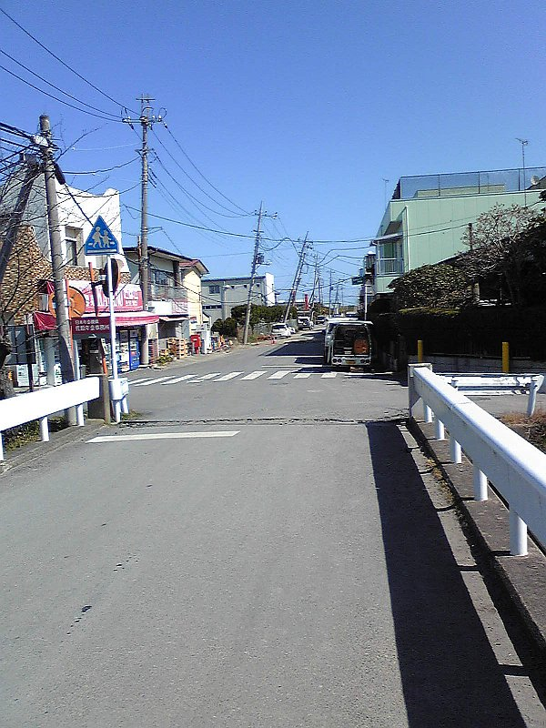

カテゴリ:
2011/03/11の地震は津田沼で迎えた。千葉県香取市粉名口の実家は兄とジジババの３人暮らしで基本無事だが、周囲に泥が吹き出して液状化が云々とのこと。
03/13に成田～銚子間が動き出したので様子を見に行ったところ、周囲の道路が波打っていたりところどころ陥没したり、さらには電柱も大きく傾いたりとそれなりの被害をうけていた。
03/13の時点では泥も乾き、重機で寄せて掬い上げる事が出来る程度にはなっていた。近所の工事業者がボランティアでブルドーザーやシャベルを持ってきて片付けに追われていた。
自宅前の泥の状況：

付近の塀と電柱の被害：

兄は市内の介護施設で働いており、その間はジジババだけになる。上水道が止まっているため給水所との往復でどうしても人手が必要となる。ジジババは二人とも高齢で耳が遠かったり脳卒中の後遺症で言葉がうまく出てこない。大きめの余震も続くし、緊急時ということで電話のやりとりや近所の連絡、お見舞いに来た人とのやりとりをする留守番も必要だ。
ということで、兄が二日連続の休みをとれる今日まで実家で過ごし、今日ようやく津田沼のアパートに一旦戻ってきた次第。また明日には実家に戻り、留守番を続けることになる。
03/18時点、近所の十間川：湧きでてきた泥については半分ほど片付けられたらしい。

03/18時点、近所の電柱遠景：とりあえず電気が通ったので助かっているが、いずれは土台から工事して電柱を取り替える必要があるだろう。

香取市HPより、その他の写真：
- 香取市ウェブサイト： 東北地方太平洋沖地震における香取市内の被災状況写真
3/22より八千代市の支援で応急措置として上水道の工事が始まるようだ。とりあえず上水道が復旧し、ジジババが地震前の生活リズムを取り戻せるまでは実家を手伝うことになるだろう。
3/13に津田沼を発ったときはまさか何日も留守番することになるとは予想していなかったため、ノートPCも持ってこなかった。
今度はノートPCやネット環境を準備し、手持ち無沙汰になることが無いようにしたい。